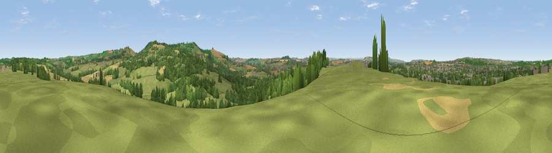

Viewpoint near Oldland Common
#24285 in England · top 43% of its area beats it · near Oldland CommonThe view, rendered

A 360° render of this exact spot computed from the terrain model, tree cover and land cover — summer colours, afternoon light, calibrated against photographs of famous viewpoints. Real trees, hedges and buildings will differ in detail.
The panorama
Grey silhouette: terrain skyline in each direction (720 bearings, Earth curvature and refraction included). Dashed green: skyline with trees (+15 m) and buildings (+8 m) as obstacles. Blue strip: how far the ground is visible on each bearing.
Where the view opens
Wedge length = distance to the farthest visible ground on that bearing (vegetation-aware). Rings at 10, 25 and 50 km.
What fills the view
59% grassland · 23% woodland · 10% built-up · 8% cropland
Angular shares of the visible panorama (visual magnitude), not map area. Landscape diversity 0.47 (0–1 Shannon).
Key numbers
More beautiful places nearby
The staircase of upgrades: each row has a higher view potential than everything closer. Driving times are estimates from straight-line distance, calibrated against real road routing — check an actual route before setting out.
| Place | Direction | Drive | Score |
|---|---|---|---|
| Viewpoint near Upton Cheyney | ESE · 2 km | ~5 min | 62.1 |
| Viewpoint near Beach | ESE · 3 km | ~6 min | 72.5 |
| Hanging Hill | E · 3 km | ~8 min | 76.4 |
| Beacon Batch | SW · 24 km | ~39 min | 79.4 |
| Viewpoint near Stinchcombe | N · 28 km | ~44 min | 80.5 |
| Garway Hill | NNW · 60 km | ~82 min | 84.6 |
| Viewpoint near Holford | WSW · 62 km | ~84 min | 85.9 |
| Viewpoint near West Quantoxhead | WSW · 62 km | ~85 min | 87.9 |
51.43507, -2.45922 · source: screening · position refined by local search. Computed location — check access rights before visiting.